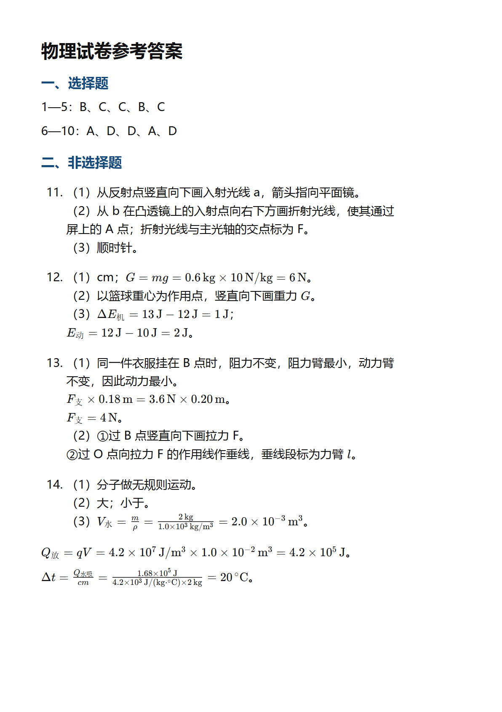
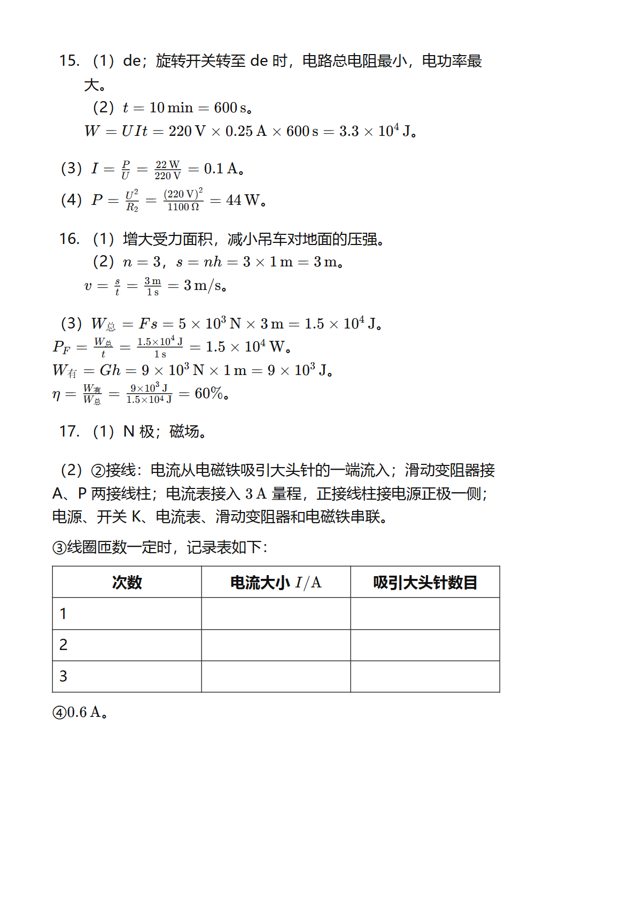
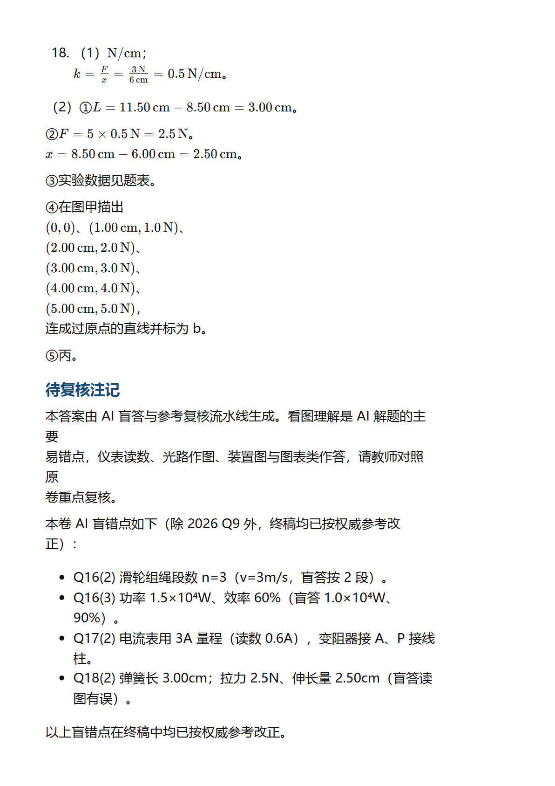

D:\CODE\classroom-answer-toolkit\正式交付\2024广州中考-v818盲答交付-Q16Q17Q18读图待复核\2024广州中考参考答案.pdf
Renderer: pdfjs-dist + local Chrome/Edge via Playwright · pages: 1, 2, 3
1192 x 1686px · text layer

1192 x 1686px · text layer

1192 x 1686px · text layer
